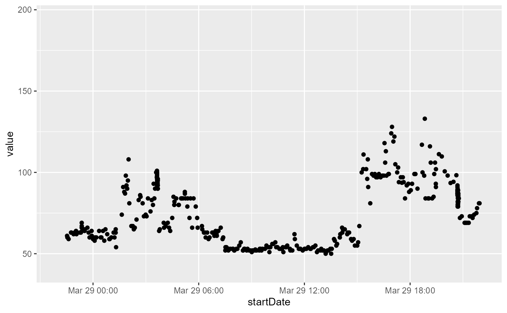

test.RmdInitial Parsing of Health Data File (Takes some time). This needs to be done only once per data pull. The parsed data can then be saved as in the .rds format
## ── Attaching core tidyverse packages ──────────────────────── tidyverse 2.0.0 ──
## ✔ dplyr 1.1.2 ✔ readr 2.1.4
## ✔ forcats 1.0.0 ✔ stringr 1.5.0
## ✔ ggplot2 3.4.2 ✔ tibble 3.2.1
## ✔ lubridate 1.9.2 ✔ tidyr 1.3.0
## ✔ purrr 1.0.1
## ── Conflicts ────────────────────────────────────────── tidyverse_conflicts() ──
## ✖ dplyr::filter() masks stats::filter()
## ✖ dplyr::lag() masks stats::lag()
## ℹ Use the conflicted package (<http://conflicted.r-lib.org/>) to force all conflicts to become errors
parsed_data <-
parse_healthdata(filename = "../dev/data/mp_export.zip",
type = "apple")
saveRDS(parsed_data,"../dev/data/parsed_healthdata_mp.rds")Note: remove “../” when in VS code, use ../ when in RStudio
parsed_data <-
readRDS("../dev/data/parsed_healthdata_mp.rds")## # A tibble: 25 × 9
## type sourceName sourceVersion unit device startDate
## <chr> <chr> <chr> <chr> <chr> <dttm>
## 1 HKQuantityTypeIden… Health 14.7.1 cm NA 2021-09-08 05:10:14
## 2 HKQuantityTypeIden… Health 14.7.1 kg NA 2021-09-08 05:10:14
## 3 HKQuantityTypeIden… Mariana ’… 8.1 coun… <<HKD… 2022-03-28 05:55:33
## 4 HKQuantityTypeIden… Mariana ’… 8.1 coun… <<HKD… 2022-03-28 05:56:57
## 5 HKQuantityTypeIden… Mariana ’… 8.1 coun… <<HKD… 2022-03-28 05:53:48
## 6 HKQuantityTypeIden… Mariana ’… 8.1 coun… <<HKD… 2022-03-28 05:58:41
## 7 HKQuantityTypeIden… Mariana ’… 8.1 coun… <<HKD… 2022-03-28 06:05:40
## 8 HKQuantityTypeIden… Mariana ’… 8.1 coun… <<HKD… 2022-03-28 06:10:28
## 9 HKQuantityTypeIden… Mariana ’… 8.1 coun… <<HKD… 2022-03-28 06:15:14
## 10 HKQuantityTypeIden… Mariana ’… 8.1 coun… <<HKD… 2022-03-28 06:16:58
## # ℹ 15 more rows
## # ℹ 3 more variables: endDate <dttm>, creationDate <dttm>, value <chr>Print 10 most frequent types
## .
## HKQuantityTypeIdentifierActiveEnergyBurned
## 476266
## HKQuantityTypeIdentifierHeartRate
## 237695
## HKQuantityTypeIdentifierBasalEnergyBurned
## 231544
## HKQuantityTypeIdentifierDistanceWalkingRunning
## 110307
## HKQuantityTypeIdentifierDistanceCycling
## 75746
## HKQuantityTypeIdentifierStepCount
## 47434
## HKQuantityTypeIdentifierWalkingSpeed
## 20060
## HKQuantityTypeIdentifierWalkingStepLength
## 20059
## HKQuantityTypeIdentifierRespiratoryRate
## 19300
## HKQuantityTypeIdentifierWalkingDoubleSupportPercentage
## 17716
# df filter where type == "HKQuantityTypeIdentifierHeartRate"
heart <- parsed_data %>% filter(type == "HKQuantityTypeIdentifierHeartRate")
heart$value <- as.numeric(heart$value)
library(ggplot2)
ggplot(heart,
aes(x = startDate, y = value)) + geom_point() +
# zoom in only 20th of march 2022
scale_x_datetime(limits = c(as.POSIXct("2022-03-29 00:00:00"), as.POSIXct("2022-03-29 23:59:59")))## Warning: Removed 237309 rows containing missing values (`geom_point()`).